💬 スキルの呼び方は2つ。どちらでもOKです
ふつうに話しかけるおすすめ
各カードの「📋 話しかける言葉をコピー」を押して、Claude Code に貼るだけ。／（スラッシュ）は付けません。
このリールを分析して https://www.instagram.com/reel/○○○
正式名で呼ぶ（慣れてきた人向け）
「/ コマンドをコピー」を押して貼ります。入力欄で / を打つと候補が出るので、そこから選ぶのが確実です。
/bunseki-reel
よくある失敗：/bunseki のように途中までだと、スキル名として認識されずエラーになります。迷ったら上の「話しかける」方でどうぞ。
アカウント設計
insta-concept-design
①自己分析インタビュー →②コンセプト設計（誰の・どんな悩みを・どう解決する）→③アカウント名＆プロフィール作成、の3ステップで発信の土台を固めます。すべての出発点。
🖥️ 操作画面
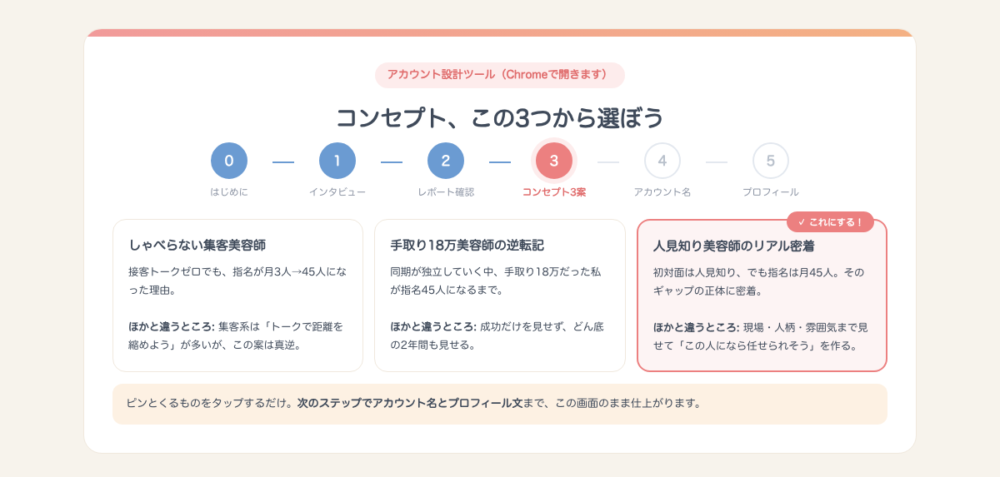
クリックで拡大 ↗
起動ワード
自己分析してコンセプト決めたいアカウント名考えてプロフィール作って
ジャンル選定
genre-sentei
どのジャンルで発信するかを、感覚ではなく市場の数字で決めます。候補ジャンルを一緒に出し、あなたのスマホ巡回と組み合わせて「今も伸びるか・収益化できるか」を判定→戦うジャンルを1つに確定して報告書にします。
📄 もらえる報告書
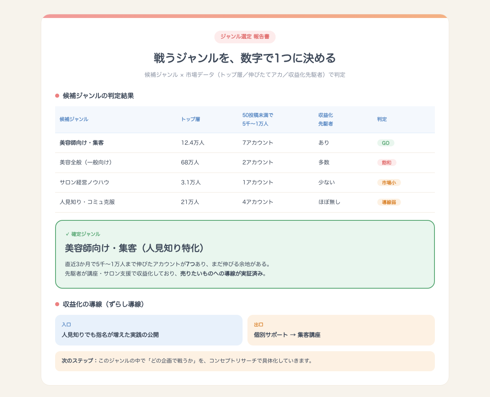
クリックで拡大 ↗
起動ワード
ジャンル選定してジャンル決めたい何を発信したらいいかわからない
💡 途中で「スマホで1日15分×2〜3日の巡回宿題」が出ます。見つけたアカウントを提出すると続きが再開します。
コンセプトリサーチ
concept-research
初期設計で出た仮コンセプトが本当に伸びるかを、実際の市場で裏取りします。あなたのスマホ巡回と組み合わせて伸びている企画を数字で判定し、お手本アカウントを「なぜ伸びているか・強みの掛け算式」まで分解したパターンカードにします。「自分はこのパターンでいこう」が決められます。
📄 もらえる報告書
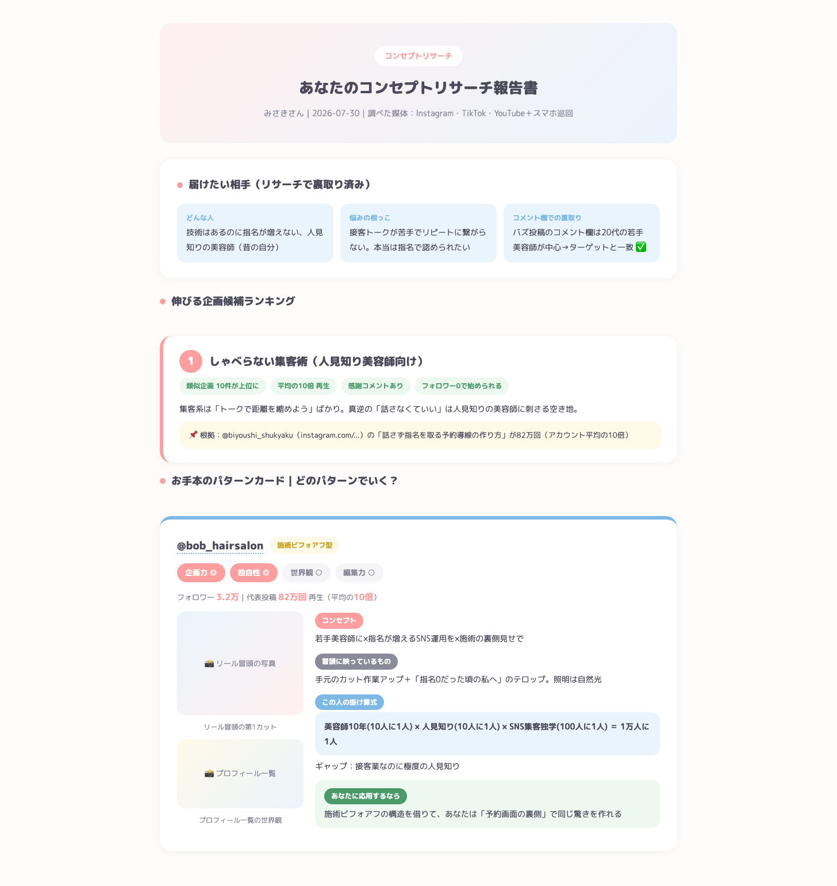
クリックで拡大 ↗
起動ワード
コンセプトリサーチしてコンセプトの裏取りしてリサーチの続き
💡 途中で「スマホで2〜3日、いいなと思ったリールを5〜10個提出する宿題」が出ます。提出すると続きが再開します。
コンセプト磨き上げ
concept-brush-up
設計で固めたジャンル・コンセプトを、もっと目立てる・差別化できる形に磨き上げたいときに使います。10案をレポートで出し、対話しながら決定版＋プロフ改善案まで仕上げます。
📄 もらえる報告書
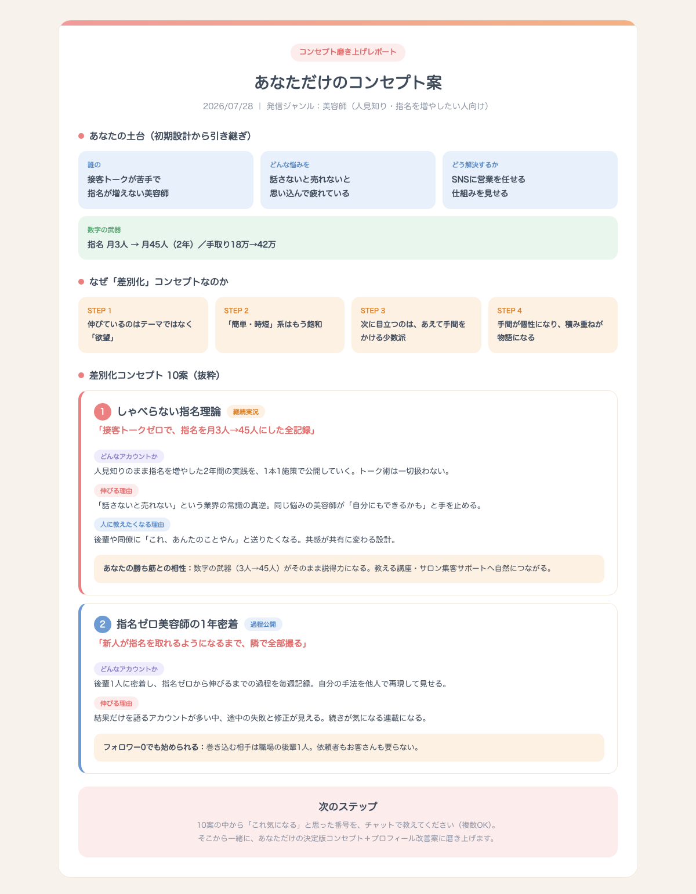
クリックで拡大 ↗
起動ワード
コンセプトを磨きたいコンセプト10案出して差別化できるコンセプト
バズ企画リサーチ
buzz-kikaku-research
発見欄で「なんか手が止まった」リールのURLを貼ると、それが本物のバズか数字で判定（フォロワー×10倍 or 100万再生）。伸びてる投稿と伸びてない投稿の冒頭7秒を比べて「なぜ伸びたか」の仮説を出し、あなたの企画への使い方まで提案します。判定の数字を毎回全部見せるので、使うほど自分で見抜けるようになります。
📄 もらえる報告書
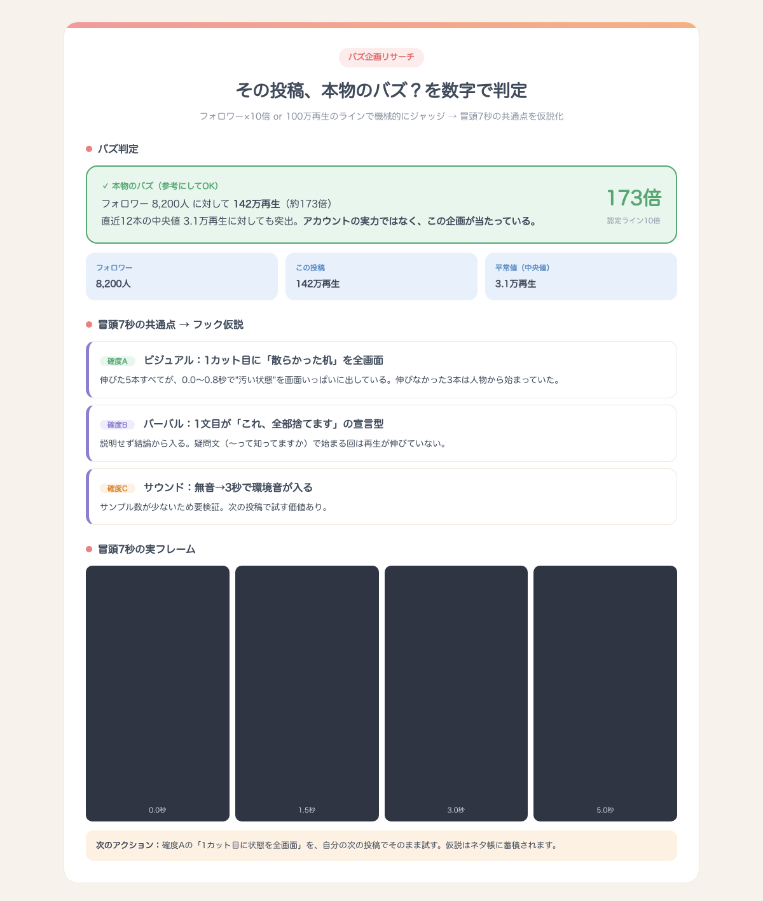
クリックで拡大 ↗
起動ワード
この投稿バズってる？なんで伸びてるのか仮説を立ててバズ企画リサーチ＋リールURL
💡 見つけた仮説は「ネタ帳」に貯まります。投稿ネタに困ったら「ネタ帳から出して」で企画を提案してもらえます。
リール1本 徹底分析
bunseki-reel
気になるリール1本のURLを渡すと、動画DL・全文文字起こし・画面解析をして、冒頭フック／サムネ設計／構成／台本と型／視聴者心理／コメント反応／自分への活かし方を1枚の報告書にまとめて開きます。
📄 もらえる報告書
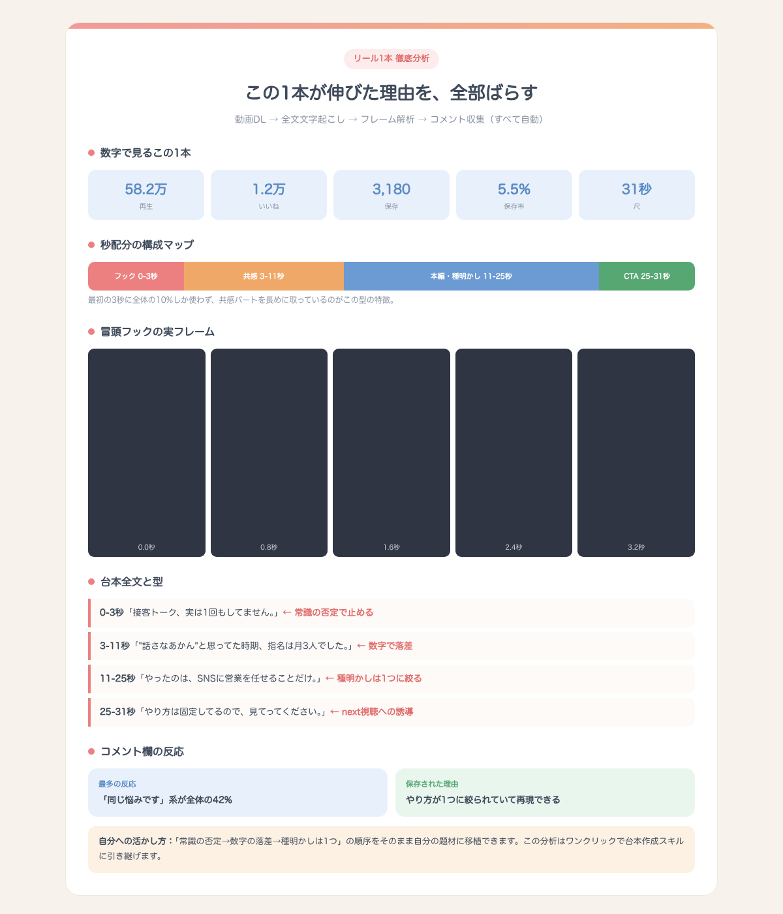
クリックで拡大 ↗
起動ワード
このリールを分析してこのリールなんで伸びてるのリールを解剖して＋リールURL
競合アカウント分析
bunseki-competitor-account
参考アカウントを丸ごと分析。伸びてる上位＋最新リールを文字起こしして、サムネの法則・台本の共通構成・伸びてる理由・自分への活かし方をサムネ入り報告書に。
📄 もらえる報告書
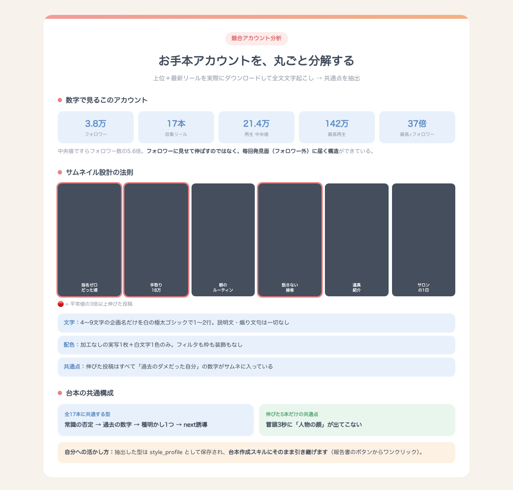
クリックで拡大 ↗
起動ワード
競合分析してこのアカウントを徹底分析してなんで伸びてるのか調べて＋アカウントURL
自分のアカウント分析
bunseki-my-account
スマホのインサイト画面録画を渡すと、裏側データ（外部リーチ・視聴維持率・保存率）×投稿の中身を突き合わせ、伸びなかった原因診断・冒頭文5案・次に作る10本リストまで出します。
📄 もらえる報告書
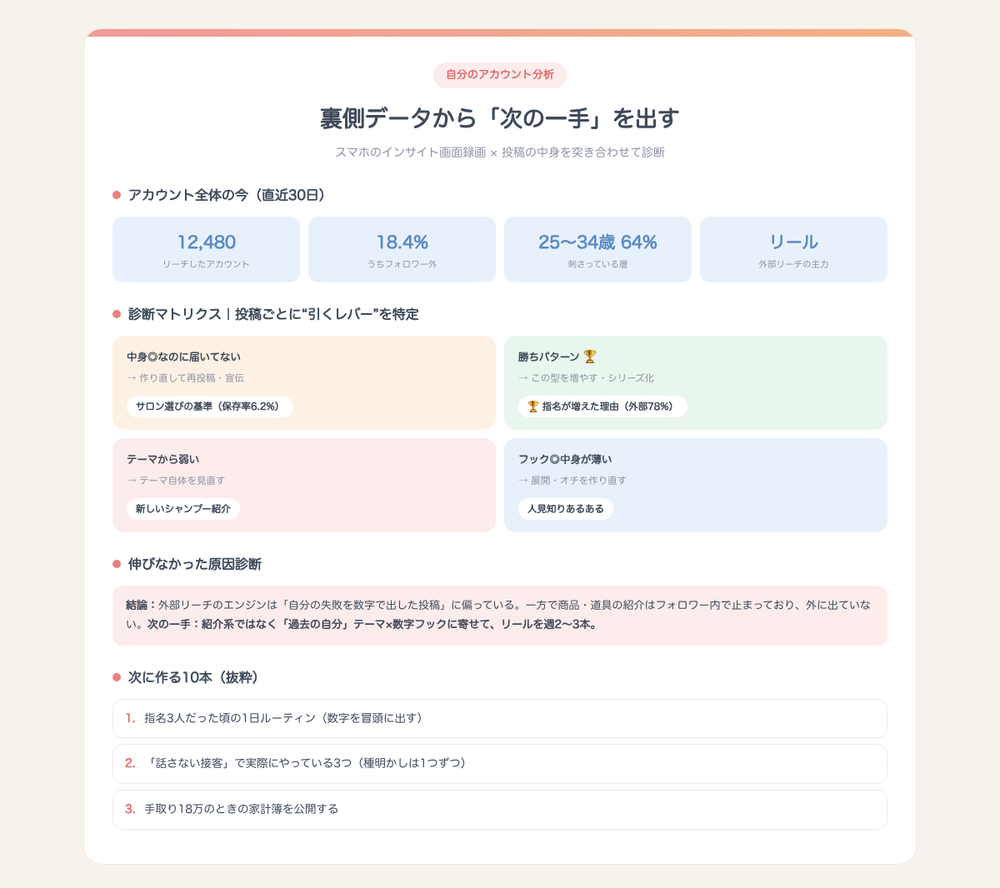
クリックで拡大 ↗
起動ワード
自分のアカウント分析して自分のインサイト分析して次の施策考えて
リール 辛口添削
tensaku-reel
自分のリールを出すと、8つの評価軸で100点満点の採点。どこで見るのをやめられるかの離脱リスクのタイムライン・最優先で直すトップ3・Before/Afterのリライト台本まで、熱血コーチ口調で返ってきます。
📄 もらえる報告書
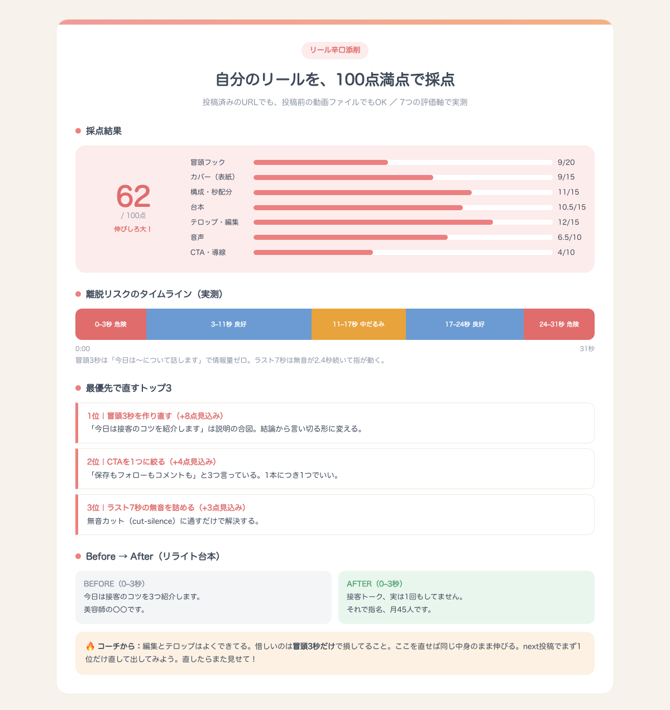
クリックで拡大 ↗
起動ワード
リールを添削してこのリール何点？投稿前にチェックして
💡 投稿前の動画ファイルでもOK。撮り直しがきくうちに直せます。※他人の参考リールを研究するのは「リール1本 徹底分析」、台本だけ見てほしいときは「台本 辛口添削」。
型移植 台本作成
daihon-copy-make
参考リールのURLや参考台本から「型」を抽出して、自分の出来事を同じ構成・文体・視聴者心理設計の台本に変換。参考の秒数マップ・完成台本・撮影メモ・キャプションを1枚のレポートにまとめて開く。
✍️ 出力の見本
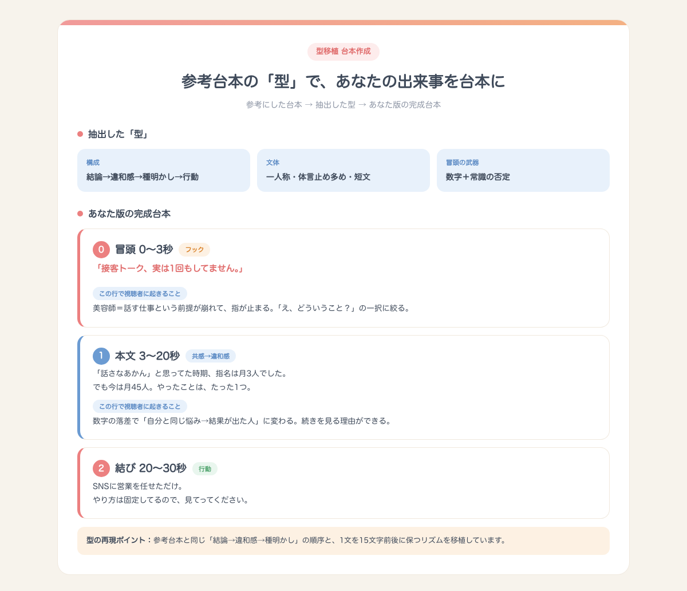
クリックで拡大 ↗
起動ワード
この台本を参考に台本を作ってこのリールの構成で書いて〇〇風で今日の出来事を台本にして
台本 辛口添削
daihon-tensaku
できあがった台本テキストを貼るだけで、動画なしで6軸100点採点＋1フレーズずつ解説（感情の動き／改善案／加えるワード）、Before→Afterのリライト完成台本まで。撮影前の最終チェックに使えます。
📄 もらえる報告書
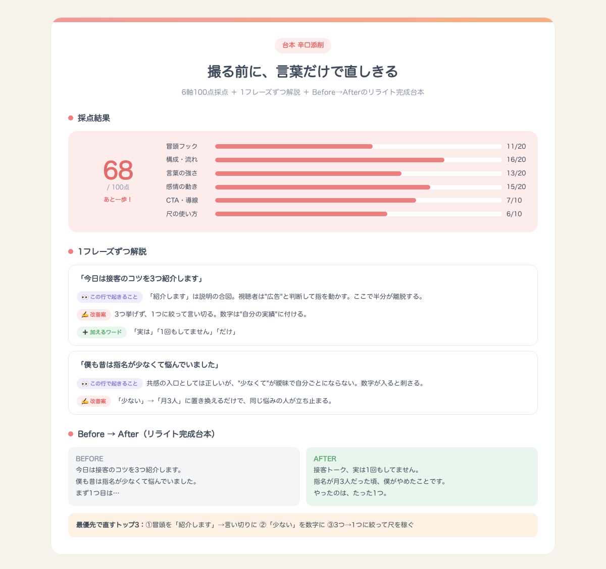
クリックで拡大 ↗
起動ワード
台本を添削してこの台本どう？台本を採点して
ストーリーズ 参考分析
stories-bunseki
お手本にしたい人のストーリーズのスクショを出すと、8つの観点で分解してプロファイルにします。いちばん大事なのは「出来事と伝えたいことをどうつないでいるか」。ここが分かると、自分の日常が全部ネタになります。
📄 もらえるもの
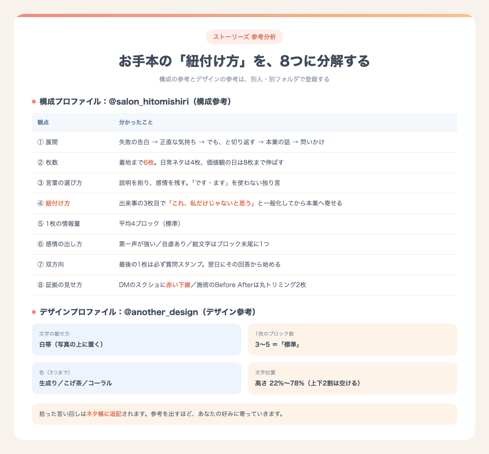
クリックで拡大 ↗
起動ワード
この人のストーリーズを分析して参考のストーリー登録してデザインを登録して
💡 構成の参考とデザインの参考は、別の人でいいです（構成がうまい人と、見た目がうまい人は別なので）。拾った言い回しはネタ帳に貯まっていきます。
日々のストーリーズ
stories-days
今日あった出来事を話すと、自分の発信ジャンルにつながる文面にしてくれます。ゴールを1つ決めて、型に乗せて、着地は3案から選ぶだけ。文面をOKしてから、1080×1920の画像まで作れます。
📄 もらえるもの
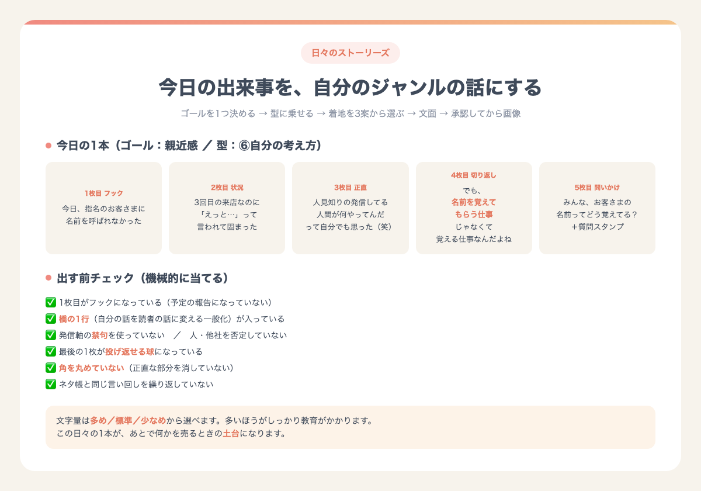
クリックで拡大 ↗
起動ワード
今日のストーリー作って今日◯◯があったストーリー画像にして
💡 文字量は多め／標準／少なめから選べます（多いほうが教育がかかります）。この毎日の1本が、あとで何かを売るときの土台になります。
ローンチのストーリーズ設計
stories-launch
自分の商品・講座を売る日から逆算して、8週間（1ヶ月半）のカレンダーを組みます。商品の存在すら出さないプレプレローンチから始めて、当日には「すでに欲しくなっている状態」を作ります。
📄 もらえるもの
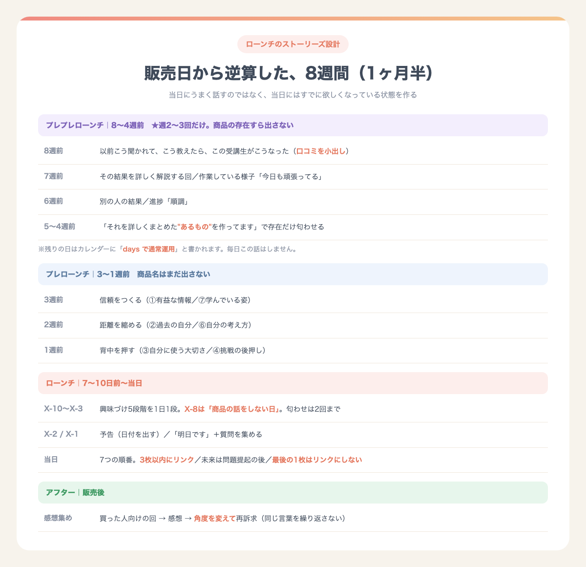
クリックで拡大 ↗
起動ワード
ローンチのストーリー設計して講座を売りたい今日のローンチの分作って
💡 毎日その話はしません。プレプレは週2〜3回だけで、残りの日は「日々のストーリーズ」で通常運用です。息切れしない形になっています。
アフィリエイト訴求のストーリーズ
stories-affiliate
商品のURLを渡すと公式ページを読み込んで理解してから設計に入ります。17種類の訴求角度カードを日替わりで配るので、同じ商品でも毎日ちがう切り口で訴求できます。期間は1週間〜1ヶ月から選べます。
📄 もらえるもの
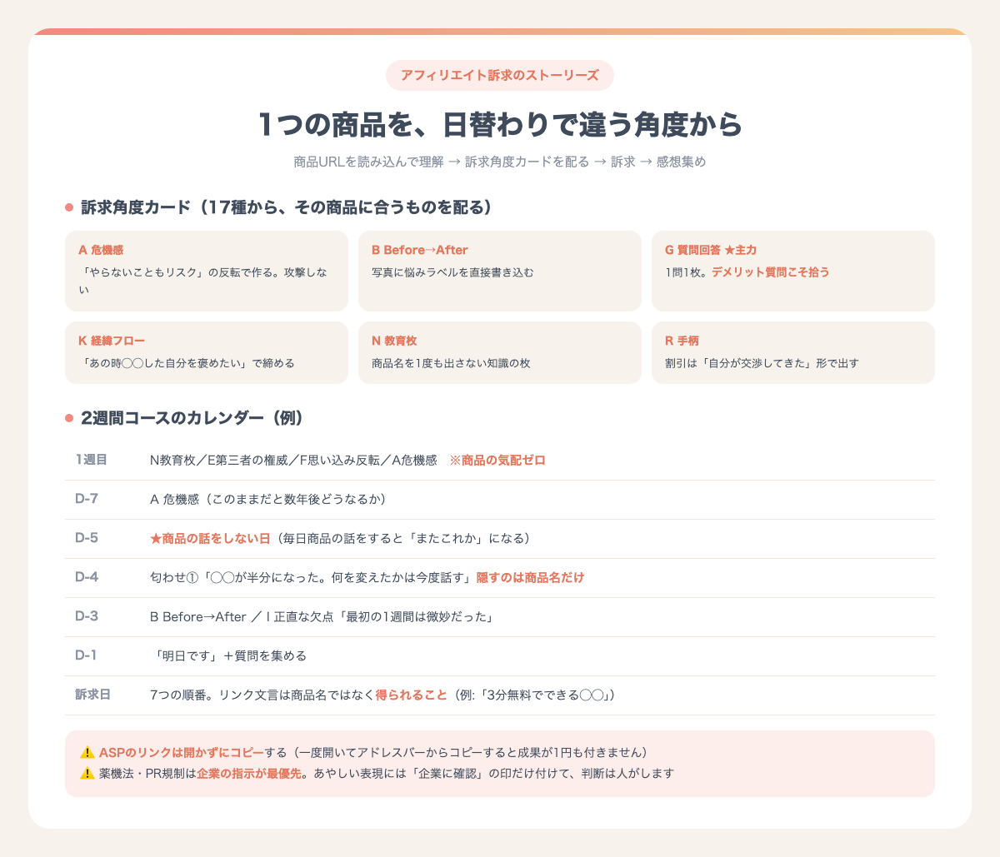
クリックで拡大 ↗
起動ワード
アフィリの訴求作って商品URL貼るね訴求の角度を変えて
💡 使った経験・口コミ・Before写真が足りないときは、集め方を先に教えてくれます。とくにBefore写真は「使う前」にしか撮れないので、最初に指示が出ます。
アフレコ動画 自動編集
reel-henshu-afreco
アフレコ音声と素材フォルダを渡すだけで、文字起こし→カード生成→素材の自動割り当て→ブラウザの編集画面（テロップ・演出を調整）まで一気に。縦型ショート動画を書き出せます。
🖥️ 操作画面
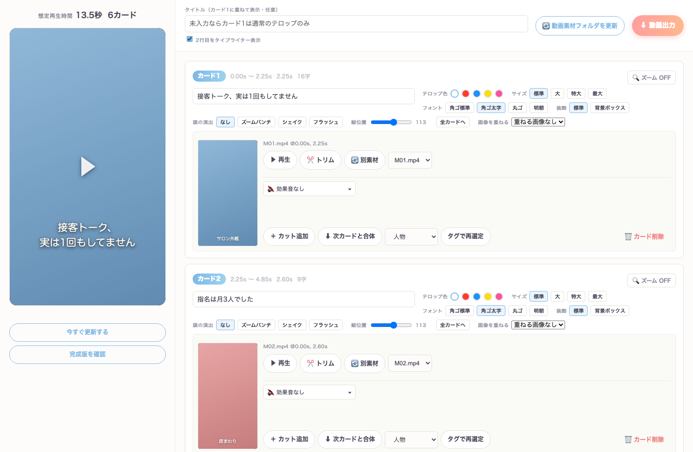
クリックで拡大 ↗
起動ワード
アフレコ動画を編集して
💡 Mac＝そのまま／Windows＝「Windows Terminal」の claude で使う（現在テスト中）
💡 初回セットアップ時に許可を何度か聞かれます。「常に許可（今後聞かない）」を選べば、以降は聞かれずスムーズに進みます（分析系のスキルではほぼ聞かれません）。
リール完コピ
reel-henshu-copy
お手本にしたい参考リールのURLを渡すと、そのリールと同じ尺・同じカット割りでカードを発行。各カードに自分の素材をはめるだけで、伸びているリールの編集リズムを丸ごと完コピできます。カードの秒数は数字で微調整でき、お手本（そのカットだけ再生）を見ながらワンクリックで分割も可能。素材が未割り当てでも参考映像で仮表示して通しプレビューできるので、途中で詰まりません。
🖥️ 操作画面
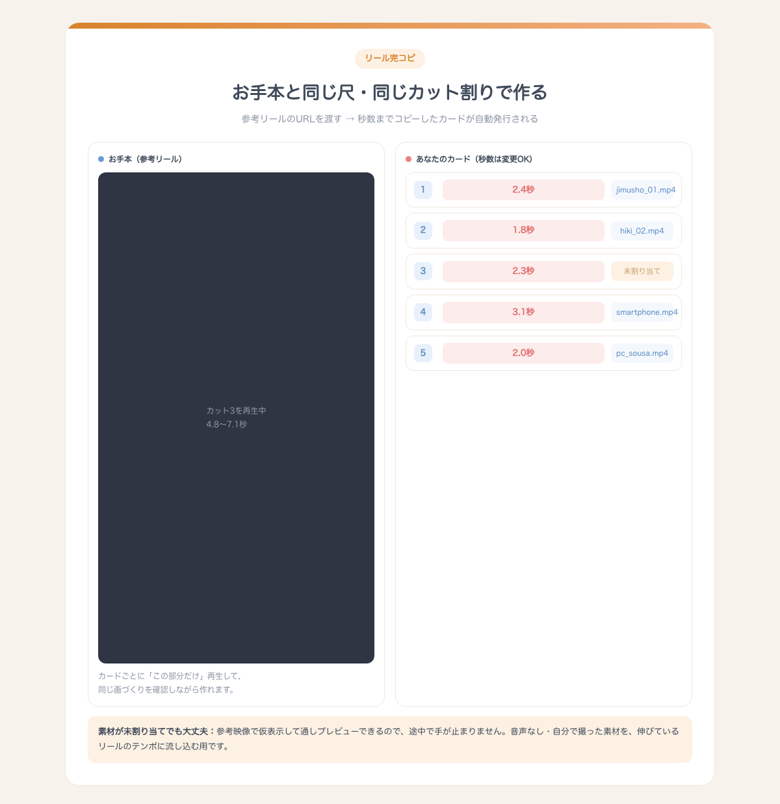
クリックで拡大 ↗
起動ワード
このリールを完コピしたい参考リールのカット割りで作りたいリール完コピ
💡 音声（アフレコ）から作るときは上の「アフレコ動画 自動編集」を使います。こちらは音声なし・自分で撮った素材を、伸びているリールの型に流し込む用です（編集画面は共通）。
無音カット
cut-silence
動画・音声の言葉と言葉の間（無音）を自動で見つけてカットし、テンポのいい素材に短縮します。しゃべっていない“間”が詰まるので、ダラっとした動画が一気に見やすく。出力は元と同じフォルダに 元の名前_cut.mp4（音声だけなら _cut.m4a）で保存され、元ファイルはそのまま残ります。
✍️ 出力の見本
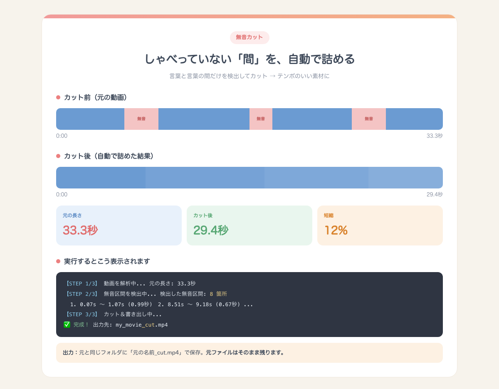
クリックで拡大 ↗
起動ワード
間をカットして無音をカット動画を短くしてジャンプカットして
💡 Apple Silicon Mac 専用。初回だけ ffmpeg が必要で、入っていなければ入れ方を案内します（1回入れれば以降は不要）。
✨ 応用編：好きな発信者の“型”を移植する（事例集）
ここは基本スキルではなく、「使い方の応用例」です。
まず 競合アカウント分析 で、お手本にしたい発信者（自分のロールモデル）を徹底分析 → その人の口調・言い回し・構成を自分の台本に移植する、という使い方ができます。下の2つは、その代表例（特定の発信者スタイルを再現するテンプレ）です。
大阪弁 1日Vlog台本応用
daihon-kyaba-vlog
その日の出来事を話すと、大阪弁・一人称の等身大な実況ナレーションの1日Vlog台本に変換。※特定の発信者スタイルの再現例です。
✍️ 出力の見本
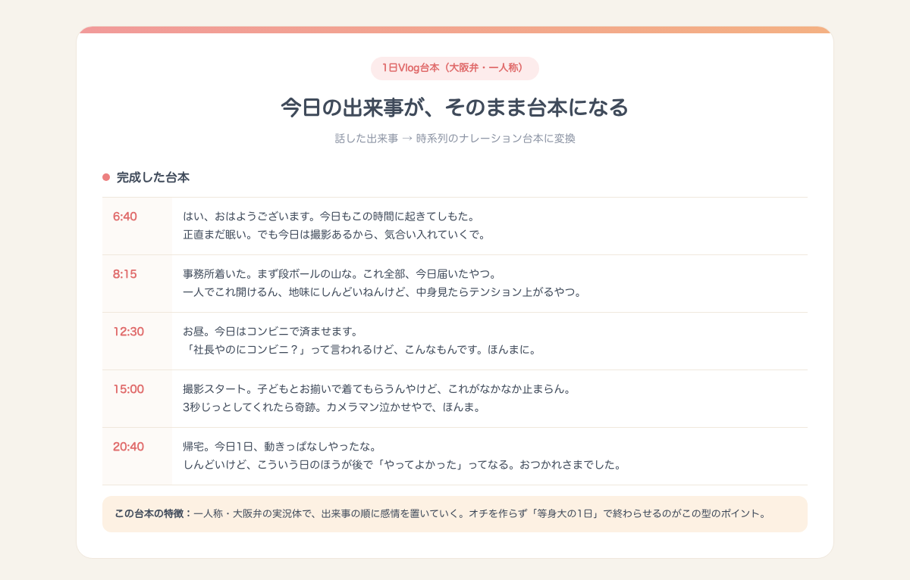
クリックで拡大 ↗
起動ワード
vlog台本書いて1日Vlogの台本作って今日あったことで台本書いて
映画風 Vlog台本応用
daihon-eiga-vlog
その日の出来事を、映画・ドキュメンタリーのナレーター文体（三人称・皮肉・官僚語）のVlog台本に変換。※特定の発信者スタイルの再現例です。
✍️ 出力の見本
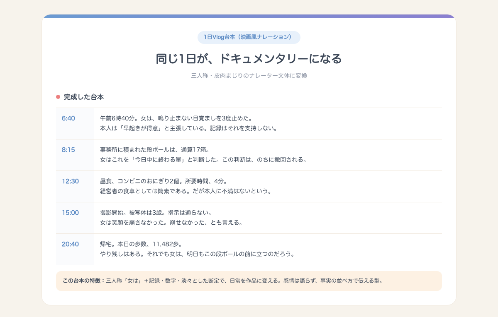
クリックで拡大 ↗
起動ワード
映画風台本書いて映画風にして